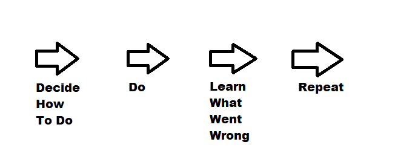

Home
Home
By James Pasko, for IE673
My company designs electrical connectors, primarily for utility companies and contractors who work for utility companies. We offer all of the industry standard connectors that one could need, in all materials, with extra high voltage options and also 45 degree and 90 degree bends if needed.
The importance of quality partnering and strategic alliances is directly connected to the belief that a rising tide raises all ships in the harbor. In a more technical response, it is the belief that all involved parties can benefit from communal involvement with each other. These parties can be the customers, clients, distributors, and many more. By partnering and forming strategic alliances, they can see improvements in processes, products, relationships between customers and customer satisfaction. They can also see a reduction of costs in regards to goods and services due to their collaboration. At Pasko Connectors, we are incorporating these beliefs by promoting work spaces that create productive team environments. As a manufacturing company, it can be easy to solely focus on your work and not cooperate with coworkers, but it is important that coworkers can communicate with not only each other but with customers and other stakeholders as well. By successfully communicating, these partnerships can lead to more knowledge transfer and more success for the company. The company can also incorporate these beliefs by partnering with other manufacturing companies for connectors so that we can focus on reducing the cost of manufacturing while furthering the technology within the industry.
Figure 1: This is an image of my lemon squeezer that I talked about.
Internal partnering model: Focuses on in-house partnerships like management to employee, team to team, and employee to employee. This is one of the most fundamental forms of quality partnering because both entities work for the same company and can only benefit from a partnership.
Partnering with suppliers: This form is very difficult because when both the company and the supplier try to win, it can lead to both of them losing. This is very common in low-bid processes because the bidder puts out a rate that might be too low for them to do quality work while the company gets low quality work. It is important to try and avoid this outcome by understanding a successful partnership is not one determined by money but rather by trust and loyalty between the two entities so that they can both win in the long run.
Partnering with customers: By partnering with customers, you can ensure customer satisfaction which will help you be more competitive in the industry. Because of this relationship, you can speak to them directly and get their feedback instead of hoping to beat out your competitors. Through communicating with them you can show that you care about their business and strive to maintain a business relationship between the two of you. This can create a long successful relationship in which both sides are winning.

Figure 2: This is an image I created to show my interpretation of the Deming Cycle.
These are the six videos I watched and loved.
Paul Ranky 06 PA ElGalleon Philippines Clip6a 720pHD wwwcimwareukandusaPaul Ranky 05 PA ElGalleon Philippines Clip3a 720pHD wwwcimwareukandusa
Paul Ranky 03 PB ElGalleon Philippines Clip4a 720pHD wwwcimwareukandusa
Paul Ranky 04 PA ElGalleon Philippines Clip4a 720pHD wwwcimwareukandusa
Paul Ranky 01 PA ElGalleon Philippines Clip5a 720pHD wwwcimwareukandusa
Paul Ranky 02 PA ElGalleon Philippines Clip6a 720pHD wwwcimwareukandusa
After watching the six videos I have hyperlinked above, it is very obvious that there is an entire environment in the ocean that many people never get to see or even think about. America has two long coastlines that provide beautiful beaches and ocean views, but how many Americans actually think about the life in the ocean? Through Professor Ranky’s SCUBA diving videos, I have seen beautiful examples of life near the ocean floor. I watched a sea turtle eating while crawling along the ocean floor with two fish taxiing on its back, a school of fish that were grouped together to look bigger in order to scare of predators. These videos reminded me of how similar oceanlife is to humans, albeit with less technological advancements. Many people in the world do not think twice about their effects on the environment, particularly on sealife. But I do not want my company to contribute to the pollution and disruption of the environment. I want to make sure that everyone at the company does not want to contribute to this destruction. I believe that we must implement green solutions to our everyday needs. We should be using green power to manufacture our products, our factory roofs should be covered in solar panels and our trucks should be electric powered. Our products should use recycled materials wherever possible and we must recycle properly at the workplace and at home as well. By implementing these ideas and more, we can ensure that our company is not only sustainable but green and not contributing to the destruction of any wildlife.
This article covers the guidance that has been given to corporations and steel companies by RMI to try and decarbonize the steel industry. The steel industry accounts for seven percent of global greenhouse gasses and there are several ways to decrease that. For starters, steel made from scrap only accounts for seven percent of total steel production emissions. So by decreasing the amount of steel manufactured by the non scrap method, which contributes 93% of the emissions, we can bring down the total emissions from the steel industry. Another method to bring down emissions is by using low emission technologies to process ore instead of current methods. One more way of reducing emissions during the manufacturing process is to use clean energy. This will lower the total emissions during steel production and can have a direct effect on nearby places using cleaner energy as well which would have a long lasting effect on our footprint. I hope that the steel industry listens to these suggestions because global greenhouse gasses are a huge problem and we need every industry to do their part in making the world a better place.
I believe that reducing steel emissions is imperative for working towards a cleaner world. By working in an electrical utility, I see steel used every single day. It is a key alloy in our infrastructure and can be found in the buildings we work in, and the cars we commute in. One of the biggest counterpoints to electric cars that I hear about is how there are huge amounts of emissions coming from the manufacturing process. By reducing steel emissions we can help reduce the impact that manufacturing cars has on the environment, which will not only help electric cars but also gasoline cars as well. This will allow us to work towards a smaller footprint we have on the world and can help combat climate change.
Reducing steel emissions, similar to all fields is very important when working towards a cleaner environment. Steel is arguably the most imperative material for building and just engineering in general so there is a large amount of waste that comes along with that. Maximizing the amount of recyclability in steel manufacturing will lower the footprint that the steel industry currently holds.
Second Article: BMW Getting Cylindrical Batteries From CATLIn this article, Zachary Shahan highlights the importance of BMW’s new agreement with CATL for battery cells from 2025 onward. This is key for their new electric vehicle line and will allow BMW to make more electric vehicles given that the battery manufacturing capacity has increased. These two factories will be in China and Europe and will provide BMW with 40GWh of batteries per year. Another important detail about these factories is that they will be producing using green clean renewable energy and ethically sourced minerals. This can be a huge selling point for sellers who want to have a positive impact on the environment as opposed to a regular gasoline car. All in all, this agreement seems like great news for BMW and the auto industry in general.
With many car companies switching to electric vehicles, it is not surprising to see BMW come out with an electric line of cars. Their electric line is to be supported by two separate gigafactories, one in China and one in Europe. These factories are both to be used with ethically sourced materials. Which is great because there is sadly a lot of unethically sourced resources in the world that we get to benefit from and never have to acknowledge. I do have hesitance with BMW because they were just fined for falsifying emission data for their diesel line of cars which certainly disrupted the industry when they first entered the news. So while these statements are all fantastic and I hope they are true, I do have an ounce of hesitation when trusting BMW.
BMW is diving into the electric vehicle industry faster than most and they signed a deal for batteries with CATL for years 2025 and beyond. These lithium batteries are one of the most unrecognized detriments to the environment in all of engineering, with the realization taking place just more recently. The mining for lithium is a very dangerous process to the land around, and it won’t be until this process can be improved that I will feel great about electric vehicle batteries. The innovation in the mining is improving, but not nearly as much as it needs to.
Third Article: Scientists Grow Lead-Free Solar Material With Built-In SwitchThe solar panel industry has just witnessed a breakthrough that offers an industry sustainable alternative without compromising on performance. A research team at DOE’s Lawrence Berkeley National Laboratory have developed a crystalline material that has an electric field built-in. This material is a lead-free “halide perovskite” which is an affordable and easy to synthesize class of solar materials that is all the buzz in the industry at the moment. By searching for a perfect, asymmetrical perovskite, researchers were able to find this material that makes the production of solar cells more efficient and cheaper. This lead free process is very important because lead has been a very bad topic in electronics for a while, one notion was moving away from lead based solder to help stop the amount of lead being released into the air. While the researchers’ discovery is not ready for commercialization, there is a lot of hope at the lab that this breakthrough has very high potential.
In this article, there is another breakthrough in solar technology. This breakthrough showcases an easier manufacturing process which can reduce solar panel costs by reducing the amount of heat needed for manufacturing. In turn, this can reduce the price of solar panels and make them more affordable for consumers. Today, the cost benefits of solar panels come mostly from government stipends that allow owning a solar panel to be extremely cheap while offering a discount on your electricity bill. But, I believe that a lot of breakthroughs in solar technology are inflated due to the vagueness of the technology. The nature of solar panels allows a plethora of ways to build solar cells and allows many adaptations to every aspect of a solar panel to increase or decrease efficiency. So while this research is important and amazing, I think it is necessary to hold off on our excitement until solar panels can generate more electricity to make the cost worth it without government subsidies.
This article shows the breakthrough in solar panel technology with the reduction of heat needed to create them as well as a new material to aid in this process. When being able to reduce the manufacturing heat from 2700 to 300 degrees Fahrenheit, this saves in costs by an immense amount. This in turn will make them more affordable to the public, but in my opinion solar panels are not a great alternative to current power as the production of these solar panels are generally detrimental to the environment.